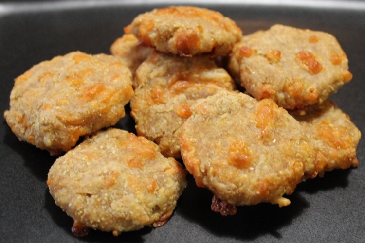

Cheesy Cat Treat Recipes

Description
Calling all feline cheese connoisseurs! These cheesy delights will make your cat come running
Ingredients:
- ¾ c. shredded cheddar cheese
- ¾ c. whole-wheat flour
- ¼ c. plain yogurt
- ¼ c. cornmeal
- 5 T. grated Parmesan cheese
Instructions:
- Combine ingredients into a dough
- Roll it out to about 1/4 inch
- Cut into one-inch pieces
- Bake on a greased cookie sheet at 350° for about 25 minutes